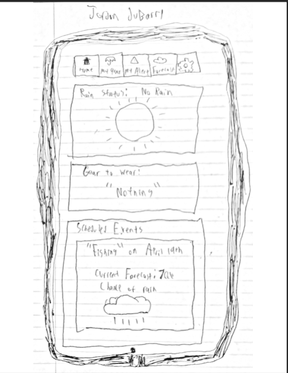
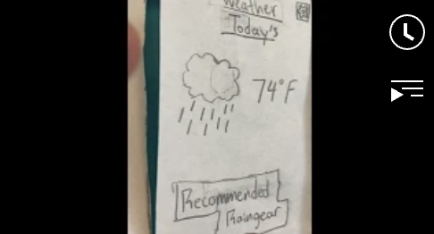

Problem Statement: Alert System for Rain

People often forget to bring their rain gear with them and then proceed to get rained on. Our solution will provide users with a way to remember to bring their rain gear.
Affinity Diagram: Alert System for Rain

My group worked together to come up with possible functions that we wanted this rain gear alert system to have. These not only include the overall alert system but also customizability that will allow users to personalize their rain alert system.
Personas: 5 Personas for Alert System for Rain

My group and I worked together to come up with personas of people that will most likely use our Alert System for Rain.
Story Boards: 5 Story boards for Alert System for Rain

My group and I worked together to come up with 5 story boards about out five personas using the Alert System for Rain. The stories show how the rain alert system improved their lives.
Story Boards: Sketches of the Alert System for Rain
My group and I worked together to come up with 5 different sketches of what the alert system for rain would look like.
Paper Prototype: Paper Prototype of Alert System for Rain
Each of our group memeber came up with their own paper prototype of what they believe the app should look like.This is a paper prototype of my vision for the Alert System.